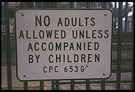
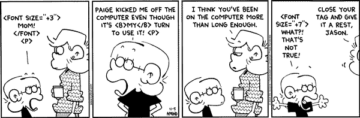

Creating OS X Cocoa Applications Using XML and Python
Dethe Elza
Blast Radius
- Project Site: livingcode.org/projects
- Blog: livingcode.org
- Source and Apps: livingcode.sf.net
Some Elementary Background

OS X, How and Why
- BSD Unix with a nice UI
- Apple OS with a robust underpinning
- GUI based on OpenGL, very fast, flexible, and powerful
- Many other nice features: powerful search tools, graphics manipulation, network autodiscovery (Rendezvous)
Cocoa: What and Why
- NextStep Object-Oriented GUI toolkit
- Coded in Objective-C
- Flexible, powerful, fast, beautiful
- Open-source version: GNUstep, based on OpenStep specification
- Kind of a steep learning curve
- Can require a lot of code to set up the UI
Python: What and Why
- A powerful high-level programming language
- Strongly, but dynamically typed
- Great integration with other languages: C, .Net, Java, and Objective-C (among others)
- Great libraries, less verbose, memory managed
Renaissance: What and Why
- XML language for building GNUstep and Cocoa application UIs
- Alternative to binary NIB files
- Declarative, simple, and powerful
- Easy to create, maintain, modify, read
- Good for teaching: Can specify applications without resorting to screenshots of Interface Builder
Mac Snobbery for Fun and Profit
What makes a complete OS X application?
- Menus, including special Apple menu, Services sub-menu, Windows menu
- Handle cut-and-paste, drag-and-drop across applications
- Minimize, zoom, hide behaviours
- Standard shortcuts for menus and commands
- Follow Apple's UI Guidelines
21st Century Renaissance
Renaissance: The Missing Manual
Renaissance is somewhat XUL-like, but not as thoroughly developed or documented
- http://www.gnustep.it/Renaissance/Manual/index.html
- http://livingcode.blogspot.com/2004/11/renaissance-tags.html
- Still needs more work: <button/>, <box/>, <hbox/>, <vbox/>, <hspace/>, <vspace/>
Missing Widgets
|
|
Missing Attributes
- Alignment not working as well as it should
- ID could be exposed to the application
- Make it easier to add and remove elements at runtime (more dynamic)
- Tooltips
- More font control, in more widgets
- Some of the special menu types
- Allow <view/> and <panel/> to have child views
- Best-effort pass-through of unrecognized attributes using key-value binding
- Inter-file references
Other Limitations of Renaissance
- Not designed for dynamic updates
- Inexplicable crashes
- Tricky to add new tags from Python (but it can be done)
Do-It-Yourself
Projects
- Hello World
- Hillegass Ch. 02 (Lottery Picker)
- Hillegass Ch. 04 (RaiseMan)
- Oblique Strategies
- GMarkup Browser
- Renaissance Editor
- ZenEdit (the 15-minute text editor)
- Tutorials and exploration ongoing on blog
Example: The 15 Minute Editor
- Built using InterfaceBuilder and Objective-C
- Built again using Renaissance and Python
- Took a little longer than 15 minutes, mostly due to immaturity of tool
- I learned a lot more about OS X and Cocoa the second time
- Less "magic" going on, explicit is better than implicit
- Result is more extensible, more reusable
Did I mention it's XML?

Is that it for XML?
- This is just the beginning
- Using Python makes XML much more accessible
- OS X uses XML idiosyncratically and doesn't expose much in the way of standard APIs
- Python has very rich XML support out of the box and much, much more available as downloadable libraries
- Still waiting on good SVG support in OS X though
Enough knowledge to be dangerous